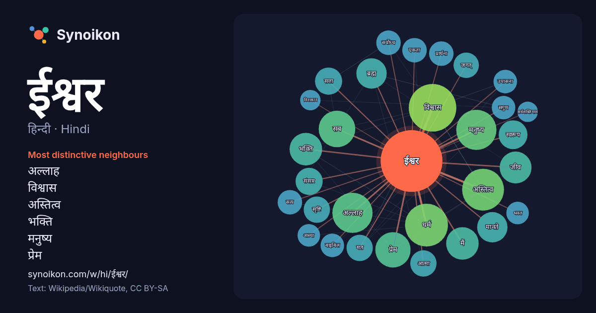

हिन्दी · Hindi · popular word
ईश्वर
“god” · The words found around it in 1314 instances from Hindi Wikipedia, Wikiquote.

Most distinctive neighbours
- अल्लाह 27×
- विश्वास 26×
- अस्तित्व 23×
- भक्ति 18×
- मनुष्य 18×
- प्रेम 17×
- ब्रह्म 17×
- जीव 15×
- सृष्टि 13×
- जगत् 13×
- धर्म 13×
- सब 13×
- सगुण 13×
- बाइबिल 12×
- एकता 11×
- मानते 11×
- संसार 11×
- उपासना 11×
- आत्मा 11×
- सत्ता 11×
× = how many times more often than in general Hindi Wikipedia text.
Most frequent neighbours
- विश्वास 49
- धर्म 40
- अनुसार 39
- अस्तित्व 38
- अल्लाह 35
- मनुष्य 35
- नाम 33
- सब 29
- अर्थ 28
- प्रेम 27
- प्राप्त 24
- भक्ति 23
- मैं 23
- केवल 22
- जीव 22
- पुत्र 21
- क्योंकि 20
- ब्रह्म 20
- मानते 20
- शब्द 20
In context
- जा सकता है। ईश्वर विषय ऐसा विषय है जिस पर मानव सभ्यता सृष्टि के आरम्भ से ही विचार और विश्लेषण करती आई है। हिन्दु धर्म के अनुसार ईश, ईश्वर, परमेश्वर एक Wikipedia snippets · ईश्वर
- ईश्वर चन्द्र विद्यासागर (२६ सितम्बर १८२० – २९ जुलाई १८९१) उन्नीसवीं शताब्दी के बंगाल के प्रसिद्ध दार्शनिक, शिक्षाविद, समाज सुधारक, लेखक, अनुवादक, मुद्रक Wikipedia snippets · ईश्वर चन्द्र विद्यासागर
- ईश्वर नगर दिल्ली का एक क्षेत्र है। Wikipedia snippets · ईश्वर नगर
- ईश्वर कालोनी दिल्ली का एक क्षेत्र है। Wikipedia snippets · ईश्वर कालोनी
- ईश्वर 1989 में बनी हिन्दी भाषा की फिल्म है। अनिल कपूर सईद जाफ़री आशा सचदेव भारती अचरेकर सदाशिव अमरापुरकर आग़ा शम्मी जयश्री गडकर विनोद मेहरा गुलशन ग्रोवर Wikipedia snippets · ईश्वर (1989 फ़िल्म)
- अल्लाह: (अरबी: الله) अरबी भाषा में ईश्वर के लिए शब्द है। इसे मुख्यतः मुसलमानों और अरब ईसायों द्वारा एक ईश्वर का उल्लेख करने के लिए प्रयोग में लिया जाता Wikipedia snippets · अल्लाह
- कहीं भी ईश्वर के स्वरूप का दार्शनिक विवेचन तो नहीं मिलता किंतु मनुष्यों के साथ ईश्वर के व्यवहार का जो इतिहास इसमें प्रस्तुत किया गया है उसपर ईश्वर के अस्तित्व Wikipedia snippets · ईसाई मत में ईश्वर
- ईश्वर गुप्ता सेतु या कल्याणी सेतु, हुगली और नदिया ज़िले के बीच, हुगली नदी पर निर्मित एक सेतु है। इस सेतु की कुल लम्बाई १.०४ किलोमीटर (०.६५ मील) है, जिसके Wikipedia snippets · ईश्वर गुप्ता सेतु
More Hindi words
- इतिहास
- कार्य
- कुत्ता
- गर्मी
- गाना
- घंटी
- घड़ी
- घोड़ा
- चाय
- चित्रकला
- छाया
- जंगल
- जलवायु
- जीवन
- तूफ़ान
- दर्पण
- द्वीप
- नक्षत्र
- नमक
- परिवार
- पहाड़
- पानी
- पैसा
- प्रकृति
- बगीचा
- बिल्ली
- भाषा
- भोजन
- माता
- मानचित्र
- मृत्यु
- मौन
- रेगिस्तान
- रेलगाड़ी
- रोटी
- वर्षा
- विज्ञान
- शक्ति
- शरद
- शहद
- शहर
- सड़क
- सत्य
- समय
- सर्दी
- सेतु
- स्वर्ण
- स्वास्थ्य
- हृदय
Precomputed on 2026-10-09 with default settings (±5 words, medium corpus). The interactive map can refresh it with live data.